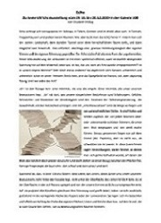
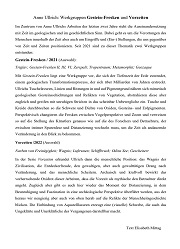
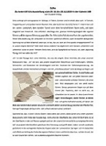
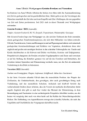

Kunst will nach draußen. Manchmal braucht Kunst auf ihrem Weg Begleitung durch Worte. Idealerweise bereichern sich Kunst und Text dabei gegenseitig. Meine Texte nähern sich neugierig und selbstbewusst den jeweiligen Werken. Dabei ist es mir wichtig, die Aufmerksamkeit für das zu öffnen, was das Kunstwerk als Kunst der Wahrnehmung neu erschließt.
Je nach Anlass, Kontext und Zielgruppe können sich die Texte in unterschiedlichen Komplexitätsgraden dem Werk nähern. Sie können dabei eher analytisch-beschreibend oder poetisch-assoziativ verfahren, und auch Teil eines gemeinsamen künstlerischen Ausdrucks werden. Ausgangspunkt und Grundlage meiner Texte ist immer das Gespräch: zwischen Dir und mir und zwischen Deinen Werken und uns.
Ich schreibe Texte für Ausstellungen, Ausstellungseröffnungsreden, Kataloge, Portfolios und Websites. Gerne überarbeite ich auch bereits existierende Textentwürfe.
Schreib mir einfach ein Mail und erzähl mir, was für einen Text Du brauchst: info@elisabeth-mittag.de.
Danach können wir dann telefonisch besprechen, wie es weitergeht. Das Gespräch ist kostenlos.
Arbeitsproben
Hier kannst Du Dir einige meiner Texte anschauen, die ich im Auftrag von Anne Ullrich verfasst habe.
 


 
Preise
Meine Preise variieren je nach Komplexität, Rechercheaufwand und Umfang des Textauftrags.
Nachdem Du mir Deinen Auftrag genau geschildert hast, schicke ich Dir ein individuelles Angebot per Mail, in dem alle vereinbarten Leistungen sowie der Abgabetermin genau festgehalten werden. Der angegebene Preis ist ein Pauschalpreis, der auch regelmäßige Gespräche und Anpassungswünsche beinhaltet.
Über mich
1984 wurde ich in Berlin geboren. Zur Schule bin ich dann in Stuttgart gegangen. Weil es mich interessiert, wie Worte Sinn machen und mich die Frage beschäftigt, was Sinn eigentlich ist, habe ich Deutsche Literaturwissenschaft und Religionswissenschaft studiert. Dafür bin ich wieder zurück nach Berlin gekommen.
Seit 2013 arbeite ich mit der Künstlerin Anne Ullrich zusammen und schreibe mit Begeisterung Kunst--Texte für sie und mit ihr zusammen.
Momentan schreibe ich außerdem an meiner Dissertation zum Thema Selbstrepräsentation in deutsch-jüdischen Theatertexten des frühen 20. Jahrhunderts.